3.1 Data importing
In this subsection, the focus is on importing data into Excel from different sources such that we can start working with it. This is a crucial first step when doing data analysis.
3.1.1 Change decimal separator settings in Excel
On most devices, the default setting in Excel is to use a comma as a decimal separator. This causes some difficulties especially when working with .csv (comma separated value) files.
- Go to the File tab.
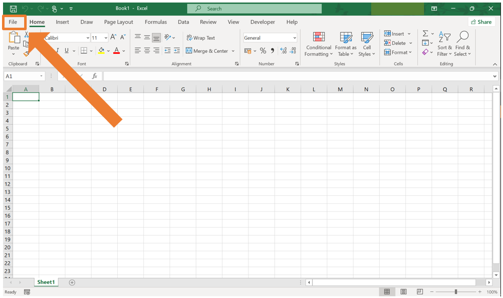
- At the bottom of the menu at the left, select More… and then Options.
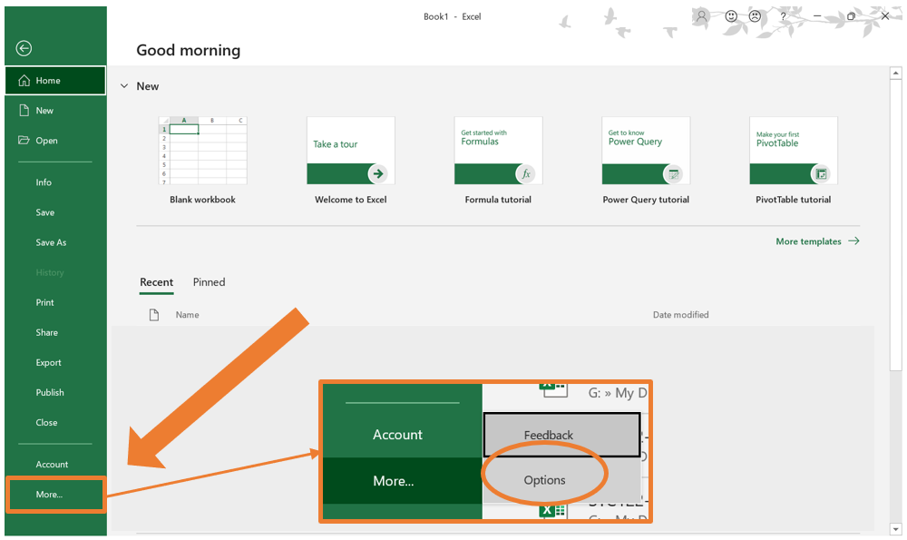
- The Excel Options window will open. Select Advanced on the menu at the left.
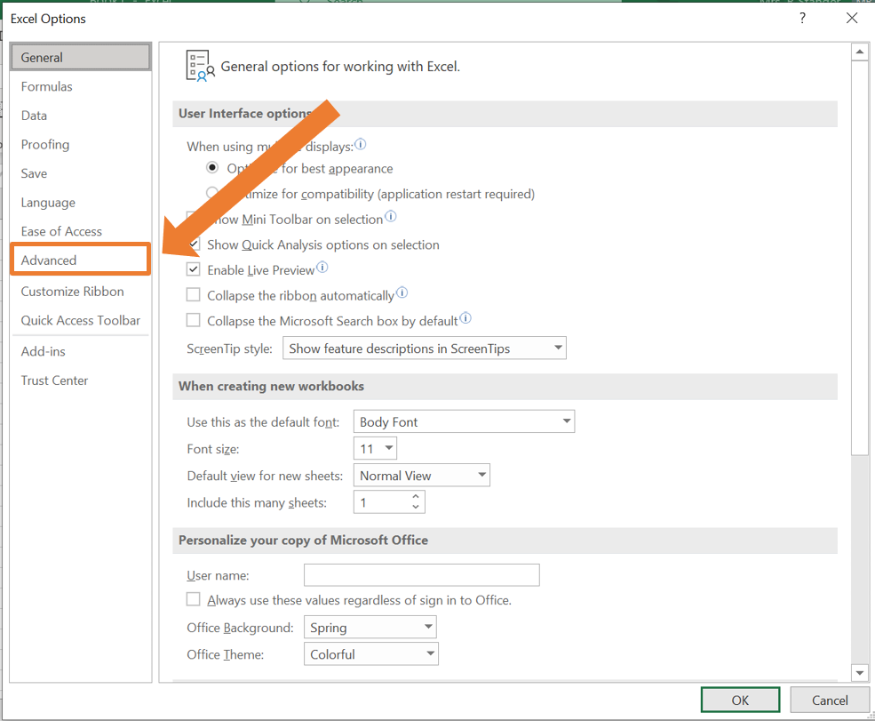
- Under Editing Options there is a you can specify the Decimal separator. In the box, make sure to have a full stop (
.) instead of a comma (,).
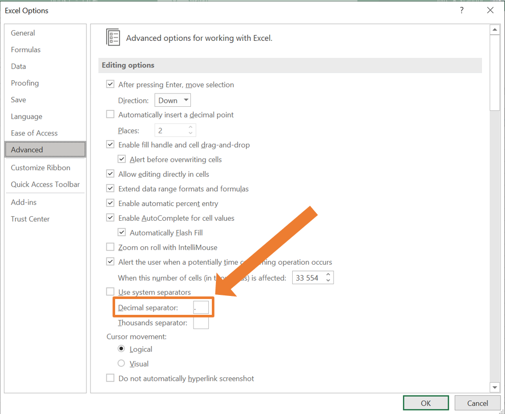
- Click OK to save the changes.
3.1.2 Opening a .xlsx file in Excel
A file with the .xlsx extension is a standard Excel file. Such files can be opened in Excel effortlessly. The following steps can be followed:
- Go to the File tab.
- Select Open.
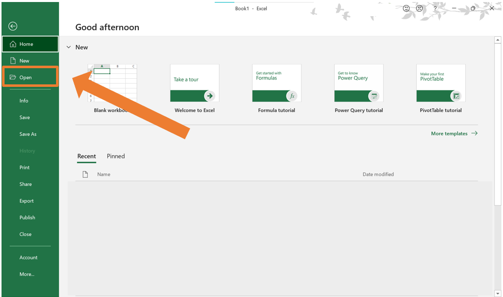
- Click on Browse.
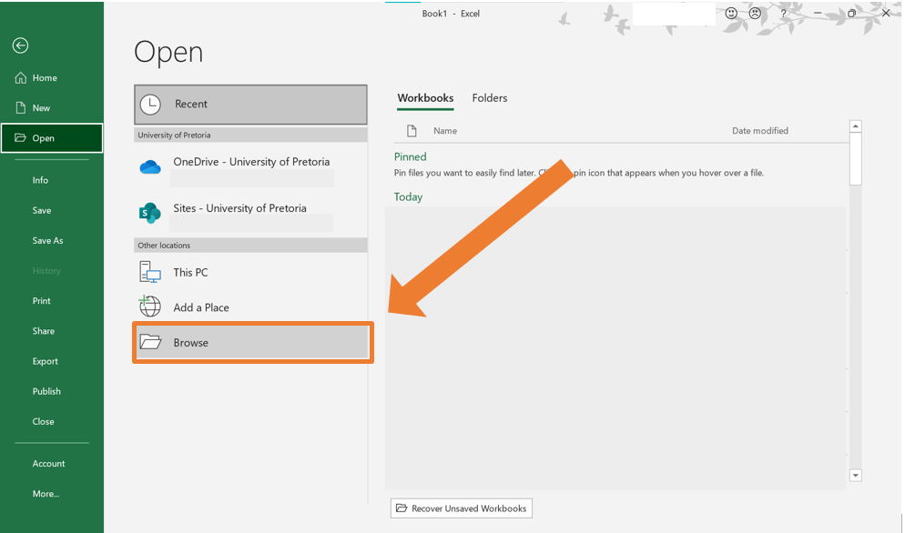
- Navigate to the location of the file you want to import and select it.
3.1.3 Importing a .txt file in Excel
Some external programs can export data in a text (.txt) file. If you wish to do some data manipulation or work with the data in any other way, you will need to import the text file in Excel.
When data is stored in a text file, various symbols (known as delimiters) are used to indicate the separation between columns. These delimiters help structure the data so that tools like Excel or programming languages can interpret it accurately. Here’s an explanation of common delimiters used in text files:
- Tabs
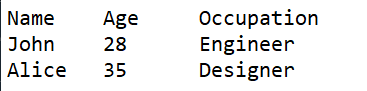
- Commas
- Semicolons
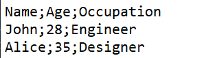
- Pipes
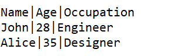
3.1.3.1 Example
You have obtained access to a data set available exclusively in text format, named SACensus2022-Data-Text.txt. To work with this data set, you need to import it into Excel. Follow these steps to complete the process:
- Open Excel and navigate to the Data tab. In the Get/Transform Data group click the From Text/CSV button.
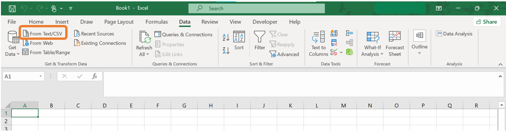
- A file selection window will appear. Navigate to the location of the file you want to import and select it. By default, the dropdown menu at the bottom right will show “Text Files (
.txt,.csv)” as the file type. Ensure this option is selected.
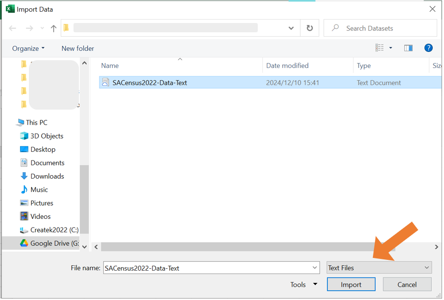
- The Import Wizard will open in Excel. Check that the data columns are separated correctly. Excel typically detects the delimiter (e.g., commas, tabs) automatically, but you can change it using the dropdown menu at the top of the wizard if needed.
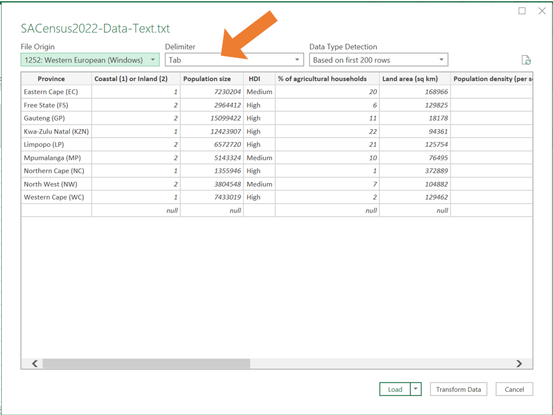
- Click Load to import the data into a new worksheet. The data will now be displayed in Excel, ready for use.
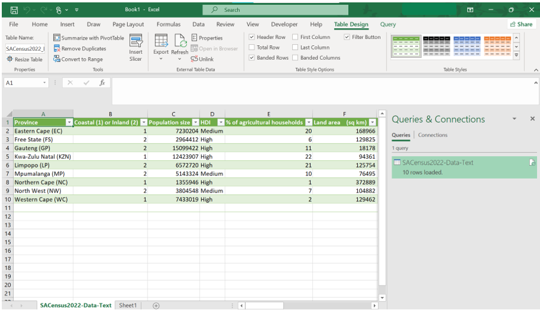
NOTE: The same process can be followed to open a .csv file in Excel. In the case where the settings for the decimal separator is correct, a .csv file can be opened using and selecting the desired file.
3.1.4 Importing data from a website
It is also possible to import a data table into Excel directly from a website, saving you the effort to manually retype the information you need.
Suppose you need to compile a list of all the districts in South Africa. You found such a list on Wikipedia and want to import it into Excel. Follow these steps:
- Open Excel and navigate to the Data tab. In the Get & Transform Data group click the From Web button.
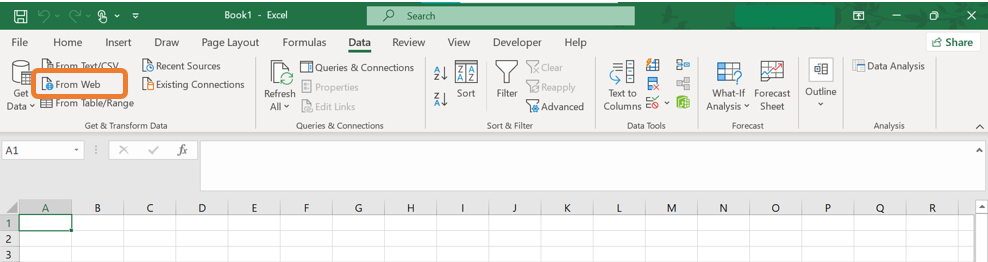
- In the From Web wizard, paste the URL of the website containing the table you want to import, then click OK.
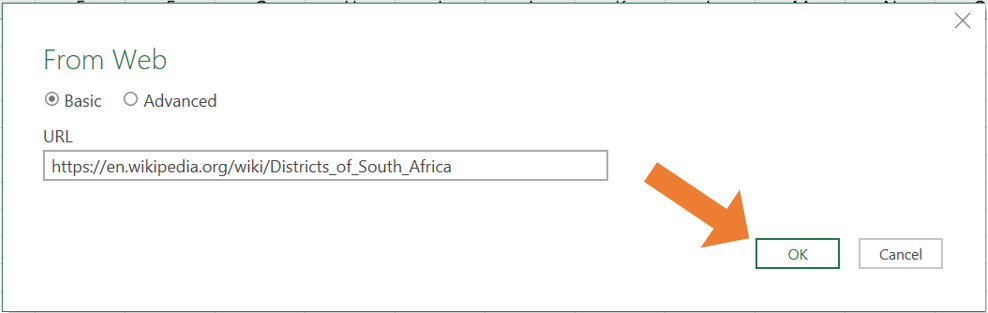
- Next the Navigator window will open. On the left-hand side, you will see a list of tables available from the webpage. Click on a table name to preview the contents of the table on the right-hand side. Select the correct table you want to import. Click on Load to import the table into your Excel worksheet.
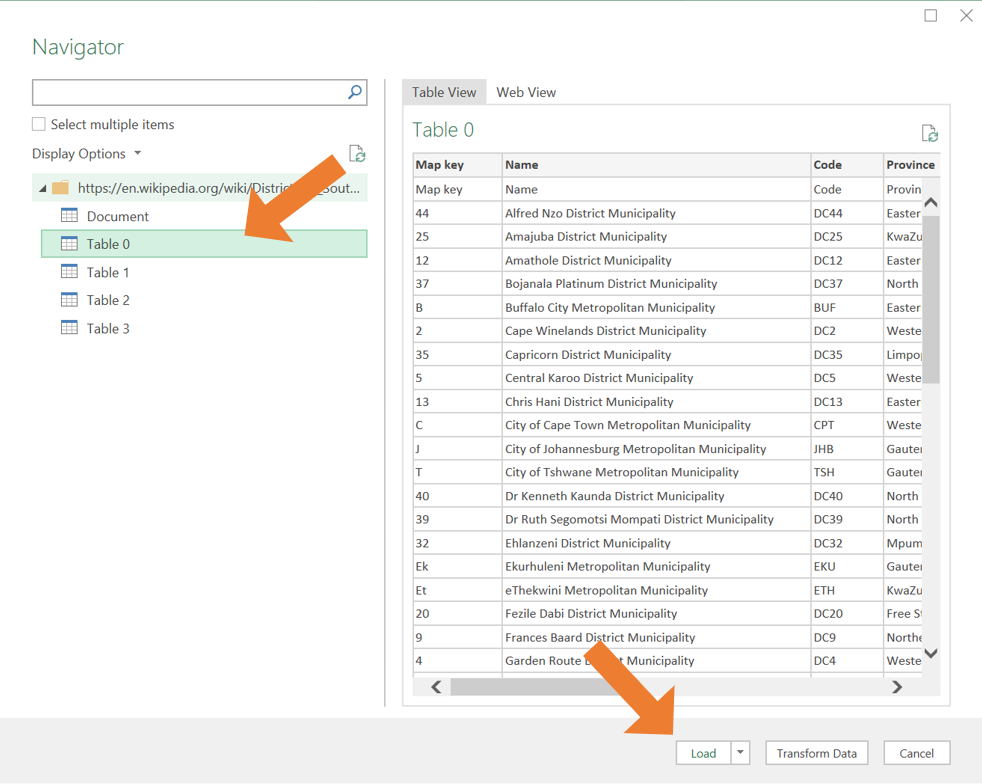
Alternatively, the From Web wizard can be accessed using the GetData button in the Get & Transform Data group.
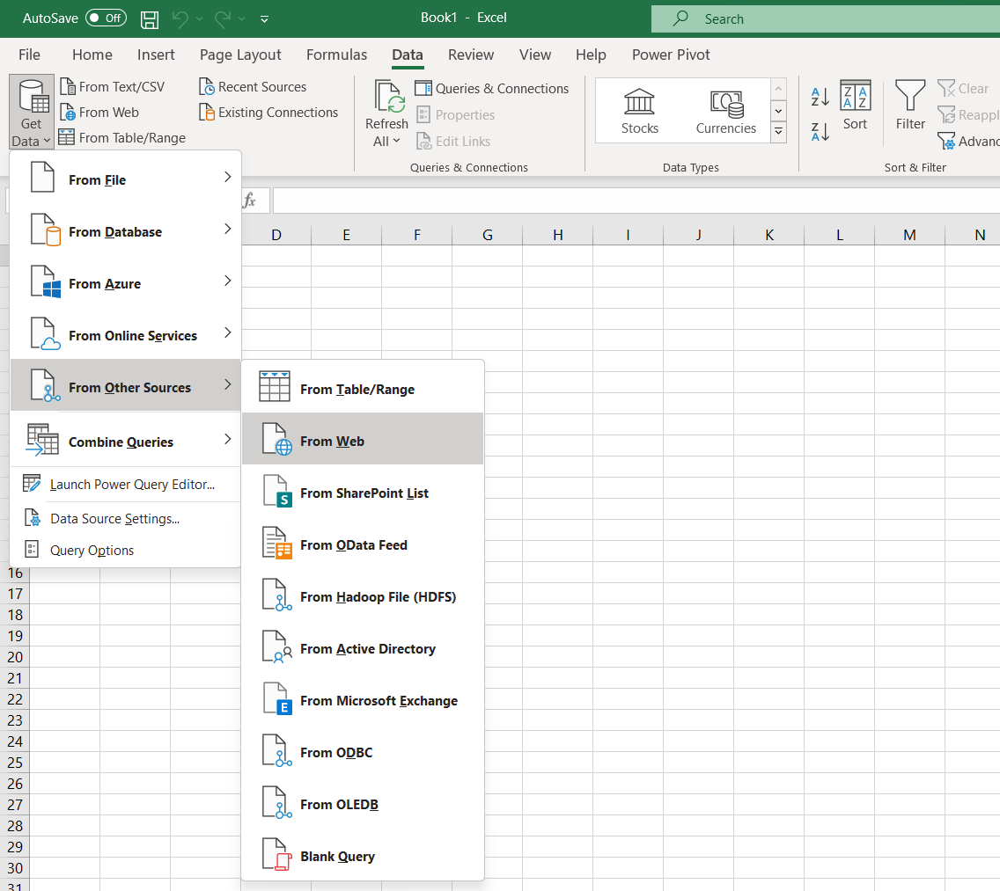